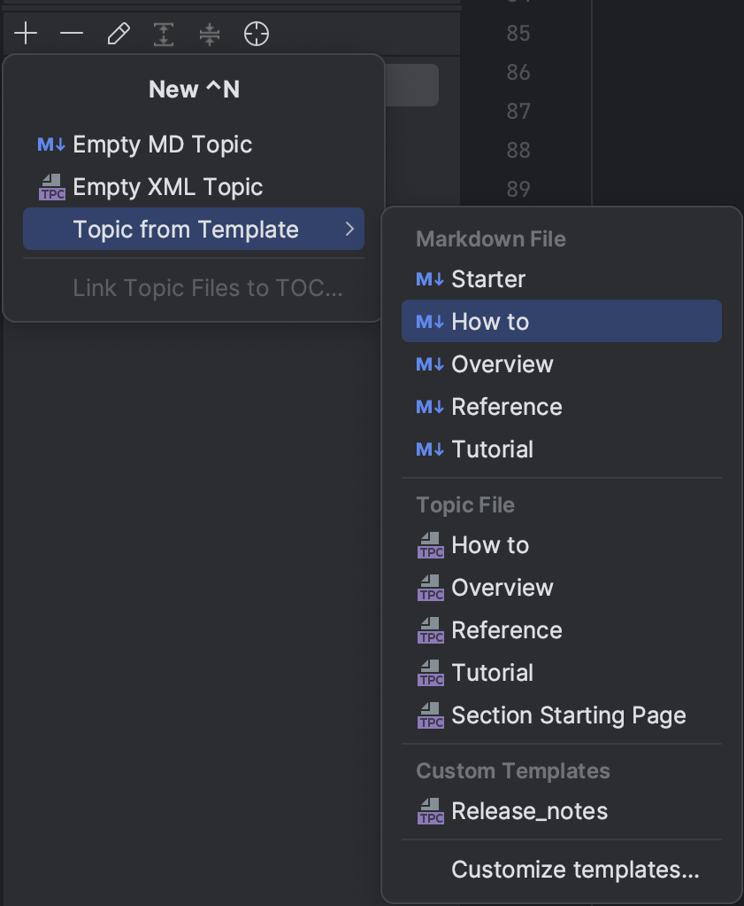
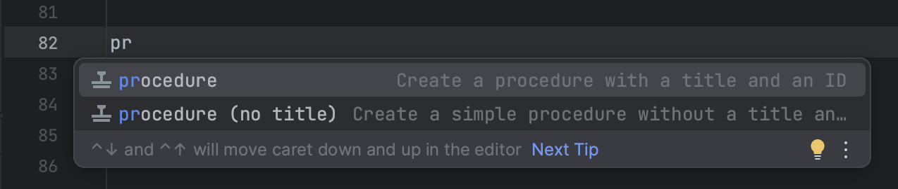
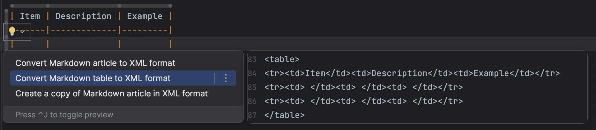

You can create empty topics, or choose a template for different types of
content that contains some boilerplate structure to help you get started:

Write content
Writerside supports two types of markup: Markdown and XML. When you create
a new help article, you can choose between two topic types, but this doesn't mean you have
to stick to a single format. You can author content in Markdown and extend it with semantic
attributes or inject entire XML elements.
Inject XML
For example, this is how you inject a procedure:
Inject a procedure
Start typing and select a
procedure type from the completion suggestions:

Press Tab or Enter to insert the markup.
Add
interactive elements
Tabs
To add switchable content, you can make use of tabs (inject them by
starting to type tab on a new line):
Apart from injecting entire XML elements, you can use attributes to
configure the behavior of certain elements. For example, you can collapse a chapter that
contains non-essential information:
Supplementary
info
Content under such header will
be collapsed by default, but you can modify the behavior by adding the following
attribute: default-state="expanded"
Convert selection to XML
If you need to extend an element with more functions, you can convert
selected content from Markdown to semantic markup. For example, if you want to merge
cells in a table, it's much easier to convert it to XML than do this in Markdown.
Position the caret anywhere in the table and press Alt+Enter:

Feedback and
support
Please report any issues, usability improvements, or feature requests to
our YouTrack project (you will need to
register).
You are welcome to join our public Slack
workspace. Before you do, please read our Code of conduct. We
assume that you’ve read and acknowledged it before joining.